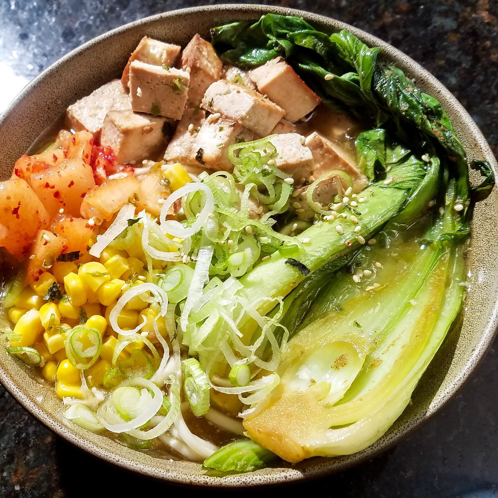
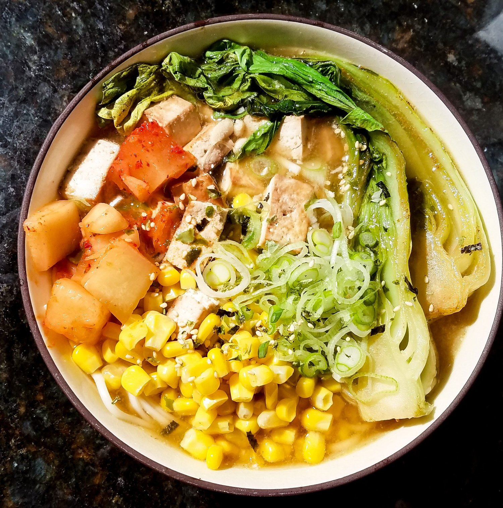

Creamy Miso Vegan Ramen


There's nothing quite like a comforting, miso vegan ramen after a long, busy day. This recipe is full of robust flavors and ingredients. It is surprisingly simple to make and sure to please a crowd.
I've always been leery of making soups. I don't know why, because literally every soup I've ever made comes out amazingly easy. With the incorporation of fresh spices and ingredients, it's sure to come out delicious! This ramen was no exception; it was so simple and satisfying - just what I needed after a looong, tiring week.
Don't let the simplicity fool you, though. This soup is full of exciting flavors: miso provides an umami flavor, fresh garlic and ginger infuses into the broth for a refreshing zing, and tahini adds a wonderful touch of creaminess. And what's not to love about noodles?! I really love this miso vegan ramen recipe since as long as you have the broth prepared, you can really add any of your favorite vegetables and toppings. I chose bok choy, tofu, and corn as my main additions. Equally as great would be mushrooms, carrots, or even some bean sprouts. Get creative with your favorites!
I used udon noodles because I personally love the thickness of udon, but use whatever you can find in your local area! If you can find fresh ramen, great! If not, feel free to use any noodle such as brown rice noodles, soba noodles, or whatever is convenient.
This creamy miso vegan ramen recipe is part of a collaboration I did with Veggie Rose. She created two versions of a cold ramen recipe - teriyaki ramen and spicy ramen. Head over to her page for more ramen deliciousness! If you try any of the recipes, let us know! You 100% should. Not 99%. 100%.
Creamy Miso Vegan Ramen
Serves: 2
-
2 bundles ramen noodles
Tofu
-
6 ox extra firm tofu
-
2 TBSP soy sauce
-
1/2 tsp powdered garlic
Bok Choy
-
2 heads baby bok choy
-
1 TBSP chia oil (or sesame oil, grapeseed oil, etc)
Broth
-
2 garlic cloves, minced
-
1/2 TBSP chia oil (or sesame oil, grapeseed oil, etc)
-
4 cups vegetable broth
-
1 TBSP soy sauce
-
2 TBSP miso paste
-
1 TBSP tahini
-
1 tsp grated ginger
Toppings
-
1/2 cup corn (frozen or fresh)
-
1/4 cup kimchi radish
-
1/4 cup scallions, diced
-
furikake (or sesame seeds)
-
Boil a pot of water, and cook the noodles in the water according to the package. It should take 4-5 minutes to cook. Remove, strain, and quickly run cold water over the noodles to prevent any further cooking. Set to the side for later.
-
Drain the tofu and press out as much water as possible. Cut into cubes, and create a single layer of tofu in a pan sprayed with nonstick spray. Add the soy sauce and powdered garlic, and cook the tofu over a medium heat for 7-10 minutes. You want to keep a close eye on this and rotate the tofu once its undersides are browned. Repeat for all edges. This step, if done meticulously, will create a great crisp edge on the tofu exterior. Once ready, remove and set to the side for later.
-
Cut the bok choy through its vertical center (total of 4 pieces), and place face down in the pan you just used. Add the chia oil and cook on a medium heat for 4-5 minutes until the bok choy has a nice sear on its open face. Remove and set to the side for later.
-
Prepare the broth. In a pan, add the garlic and oil. Let the garlic sautee for 1-2 minutes, until it become aromatic and slightly softened. Then add the vegetable broth and bring to a boil. Once boiling, reduce to a simmer. In a small bowl, mix together the soy sauce, tahini, miso paste, and ginger. Pour into the simmering broth and stir to combine. Let simmer for 1-2 minutes, and then it's ready! The broth will look creamy and cloudly - that's good!
-
Combine all of your ingredients amongst 2 serving bowls. It's best to combine in this order - noodles, tofu, bok coy, corn, and kimchi. Then add the broth until the rest of the bowl is full. This hot broth will warm up your ingredients. Garnish with scallions and furikake.